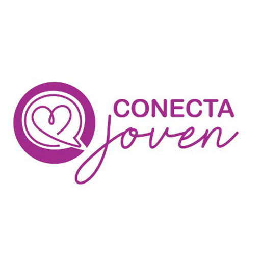

Conecta Joven
Tu espacio para sentir,
entender y crecer
Un lugar privado y seguro para conocer tus emociones, llevar tu diario y encontrar apoyo confiable cuando lo necesites.

Conecta Joven
Un lugar privado y seguro para conocer tus emociones, llevar tu diario y encontrar apoyo confiable cuando lo necesites.
Hoy
¿Cómo estás hoy?
Hacé tu check-in emocional del día en menos de un minuto.
Tu semana
Accesos rápidos
Escáner emocional
Es opcional. Solo vos vas a poder leer esto.
Gracias por contarnos cómo estás. Esto se sumó a tu semáforo de bienestar.
Tu evolución
Así fue cambiando tu estado emocional. Tocá un día para ver el detalle.
Esta semana tu bienestar se mantuvo mayormente en calma, con un pico de atención el viernes. Las instituciones solo ven datos generales y anónimos a través del Mapa de Bienestar Escolar — nunca tus registros personales.
Privado
Nueva entrada
Autoconocimiento
Ejercicios breves para conocerte mejor y regular tus emociones.
Biblioteca digital
Tu cuenta
Tu nombre
Tu escuela
Está bien pedir ayuda. Si sentís que podés lastimarte, que alguien está en riesgo o que necesitás ayuda urgente, hablá ahora con un adulto de confianza, el equipo de orientación de tu escuela o los servicios de emergencia de tu zona.
Apoyo y contención
Si estás pasando por un momento difícil o necesitás ayuda urgente, no estás solo/a. Llamá gratis desde cualquier celular tocando el número:
Policía, bomberos y emergencias médicas las 24 horas.
Atención especializada para niños, niñas y adolescentes. Confidencial.
Centro de Asistencia al Suicida. Apoyo emocional las 24 horas.
Contención y asesoramiento ante situaciones de violencia de género.
Prototipo interactivo de Conecta Joven · Tocá los botones para navegar como en una app real.